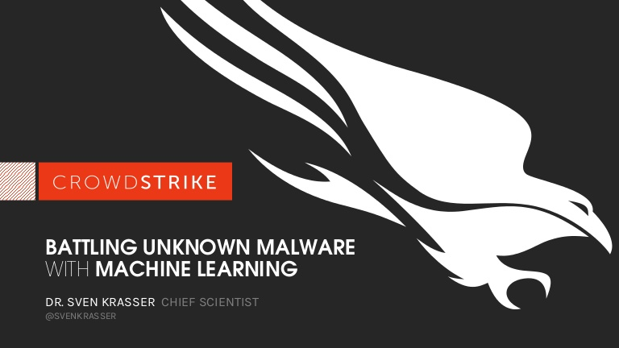

.jpg)
How to detect malware and remove it with CrowdStrike?
The best approach to protect against malware is to employ a unified array of methods. Machine learning, exploit blocking, whitelisting and blacklisting, and indicators of attack (IOCs) should all be part of every organization’s anti-malware strategy.
CrowdStrike Falcon combines these methods with innovative technologies that run in the cloud for faster, more up-to-the-minute defenses.
The CrowdStrike Falcon platform gives analysts and threat researchers rapid and comprehensive malware search capabilities through access to the largest and most active repository of threat events and artifacts in the industry. The repository contains a 300TB collection with over 400 million files and indexes over 2 trillion events each week.

All of this data is available for real-time search — both metadata and binary content — made possible within seconds by patent-pending indexing technology.
Deep analysis of evasive and unknown threats is a reality with Falcon Sandbox. Falcon Sandbox enriches malware search results with threat intelligence and delivers actionable IOCs, so security teams can better understand sophisticated malware attacks and strengthen their defenses.
To battle the growing threat of mobile malware, organizations need visibility into which devices are accessing their networks and how they’re doing it. CrowdStrike’s Falcon for Mobile delivers mobile endpoint detection and response with real-time visibility into IP addresses, device settings, WIFI and Bluetooth connections, and operating system information.